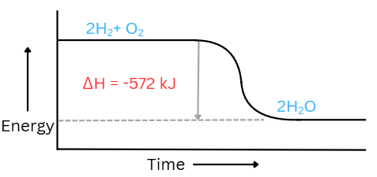
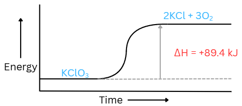

Chemical Equations
Chemical equations represent chemical reactions. The equation shows how chemicals are being used up (reactants) and produced (products).
|
General structure of a chemical equation: |
REACTANTS → PRODUCTS |
Example: 2H2 + O2 → 2H2O |
A chemical reaction can also be written using words (word equations).
Chemical Equation |
Word Equation |
|---|---|
| 2H2(g) + O2(g) → 2H2O(l) | Hydrogen + Oxygen → Water |
|
COEFFICIENT - the number placed in front of the symbols: |
2H2(g) + O2(g) → 2H2O(l) |
|
SUBSCRIPT - the small number written at the bottom, after the chemical symbol ot show the number of atoms: |
2H2(g) + O2(g) → 2H2O(l) |
|
STATES - the small letters written at the bottom in parentheses, after the chemical symbol:
|
2H2(g) + O2(g) → 2H2O(l) |
- Liquids:
- Pure substances
Example: H2O, Br2, C3H6O(acetone), C2H5OH(ethanol), and Hg are liquid are room temperature. - Aqueous:
- A substance that is dissolved in water.
- Bases are always aqueous.
- Bases: Metal + OH-
Example: Ca(OH)2 - Acids are always aqueous.
- Nitrate salts are always soluble in water (aqueous)
- Nitrate salts: Metal + NO3-
Example: NaNO3 - Alkali salts are always aqueous
- Alkali salts: Alkali metal(first column on PT) + anion
Example: NaCl - Solids:
- Can form during a chemical reaction as a precipitate.
- Precipitate is a solid that separates from the liquid in a mixture
- Metals are solid at room temperature, except for mercury (Hg)
- Gases:
- Hydrogen, nitrogen, oxygen, fluorine, chlorine are gases at room temperature.
- They are also diatomic meaning that they exist in pairs
Example: O2, H2, Cl2 - Br is also diatomic, but is a liquid at room temperature.
- I is also diatomic, but is a solid at room temperature.
H O F Br I N Cl
Conservation Laws
SYSTEM - The part of the world that you are observing or studying in an experiment.
Types of Systems:
| OPEN SYSTEM | CLOSED SYSTEM | ISOLATED SYSTEM |
|---|---|---|
|
||
| Example: A pot of hot water with no lid. Steam (matter) and heat (energy) are leaving the system. | Example: A pot of hot water with a lid. Steam is not able to leave the system, however the heat is able to pass through the pot. | Example: A perfectly insulated thermos where the steam and heat are not able to escape. |
SURROUNDINGS - Everything else outside the system.
- LAW OF CONSERVATION OF MASS
- In a closed system, the total mass of the reactants is equal to the total mass of the products.
- Matter cannot be created or destroyed during chemical reactions.
- LAW OF CONSERVATION OF ATOMS
- Atoms may be rearranged in chemical reactions, however, they cannot be created or distroyed.
- This is why we balance chemical equations.
- LAW OF CONSERVATION OF ENERGY
- In a closed system, the amount of energy does not change in a chemical reaction, however, it may change forms.
Balancing Equations
The reactants and products side should have the same number of each atom.
How to Balance Chemical Equations
STEP 1: Count the number of atoms of each element on the reactant and product side.
- H2O → 2 hydrogen atoms, 1 oxygen atom
- 5H2O → 10 hydrogen atoms, 5 oxygen atoms
- Fe2(SO4)3 → 2 Fe atoms, 3 S atoms, 12 O atoms
- 2Fe2(SO4)3 → 4 Fe atoms, 6 S atoms, 24 O atoms
- 3MgSO4⋅7H2O → 3[ MgSO4⋅7(H2O)] → 3 Mg atoms, 3 S atoms, 42 H atoms, 33 O atoms
- Distribute the coefficient 3 to both the main compound MgSO4 and the water molecules H2O
- Distribute the 7 to the water molecule H2O: 7 x (H2O)
- Add together the all oxygens
Notes:
STEP 2: Add coefficients to balance the number of atoms, don't change the subscripts.
STEP 3: Double check to make sure that the number of atoms on both sides are equal.
STEP 4: Reduce the coefficients if needed, the coefficients have to be a whole number.
Example:
Before: 4H2 + 2O2 → 4H2O
After: 2H2 + O2 → 2H2O
Types of Chemical Reactions
| SYNTHESIS | DECOMPOSITION | SINGLE REPLACEMENT | DOUBLE REPLACEMENT | NEUTRALIZATION | COMBUSTION |
|---|---|---|---|---|---|
| Two or more substances combine to form one compound. | One compound breaking down into two or more simpler substances (reverse of synthesis). | One element replacing the other element in a compound (metal from one compound swaps with metal from the other compound). | Two compounds exchanging ions to form new compounds(non-metal replaces non-metal, metal replaces metal). | A special type of double replacement reaction where an acid reacts with a base to produce a salt and water. | A compound reacting with O2 to produce CO2 and H2O. This reaction will release heat or light energy. |
| General form: A + B → AB |
General form: AB → A + B |
General form: A + BC → B + AC |
General form: AB + CD → AD + CB |
General form: Acid + Base → Salt + Water (HX + MOH → MX + H2O) |
General form: Hydrocarbon(CxHy) + O2 → CO2 + H2O The key element is oxygen: Compound + O2 → CO2(if C present) + H2O(if H present) + SO2(if S present) + NO2(if N present) |
Example:
|
Example:
|
Example:
|
Example:
|
Example:
|
Example:
|
Reactivity
- In single replacement reactions, one element replaces the another in a compound, however not all elements are strong enough to replace others.
- For an element to replace another (whether it is a metal, non-metal or hydrogen), it has to be stronger in order to kick out the other element .
- For an element to be "strong" enough, it has to have a higher reactivity than the element it's trying to replace.
- The chemical reactivity table on the right can help us determine which elements have a higher reactivity.
✅If the element is more reactive than the one in the compound → single replacement occurs.
❌If the element is less reactive than the one in the compound → no reaction occurs (NR).
Example:
- Cl2(g) + 2KBr(aq) → 2KCl(aq) + Br2(l)
Chlorine is more reactive than bromine, so single replacement occurs. - Cl2(g) + 2KF(aq) → No Reaction (NR)
Chlorine is less reactive than fluorine, so no reactions occurs.
Energy Change In Chemical Reactions
- All molecule are held together by chemical bonds.
- During a chemical reaction, these bonds break and new ones form.
- Bonds breaking:
- This process is endothermic.
- It requires energy (usually in the form of heat).
- Energy from the surroundings enter the system (system becomes warmer).
- Bonds forming:
- This process is exothermic.
- It releases energy (usually in the form of heat).
- Energy exits the system and enters the surroundings (surroundings becomes warmer).
ΔH = Hproducts - Hreactants
Note: ΔH = change in enthalpy
- ΔH < 0 → exothermic
- ΔH > 0 → endothermic
| Exothermic Reaction | Endothermic Reaction | |
|---|---|---|
| 1. Chemical Equation | 2H2(g) + O2(g) → 2H2O(l) + 572 kJ ΔH = -572 kJ |
KClO3 + 89.4 kJ → 2KCl + 3O2 ΔH = +89.4 kJ |
| 2. Graph |  |  |